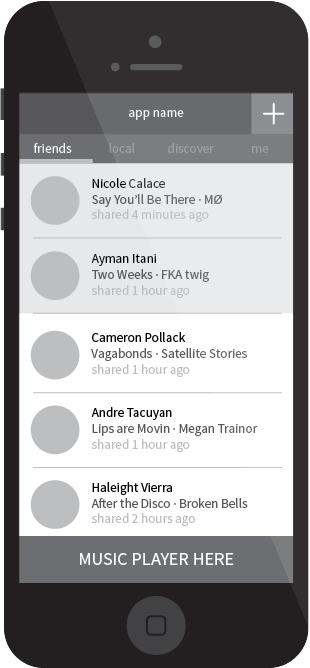

Interaction Design
Concept Ideation
CuAppDev is a project team at Cornell that strives to build one iOS application a semester to help sharpen members’ design and development skills. Our project team spent the first two weeks of the semester brainstorming an idea for an app to build for the rest of the semester. All 24 members of the team (both developers and designers) were involved in the initial brainstorming process.
The app concept did not have to be revolutionary, as the point of our project team is member education. It was much more important to us that the project was large enough for each of our members to feel like they owned part of the app, but small enough that the app could be built in a semester.
We held two major brainstorming workshops with the entire team. We asked members to write down any ideas they had for apps they’d want to work on, grouped together similar concepts, and discussed pros and cons of group favorites. After cycling through 30+ ideas, we had a few possible contenders. We selected the vague idea of ‘snapchat for music.’

Preliminary User Research
My design team and I developed an interview protocol to better explore current practices and needs for music discovery and sharing. We interviewed around 15 participants, all of whom were college students. We chose college students and young professionals as our target demographic, as they tend to already use popular music services like Spotify, and are most likely to adapt new social media. Some key insights we gained from our participants included how few people even knew Spotify offered music sharing. A number of participants also mentioned how they intentionally listened to music on services like Spotify in private sessions, because they did not want to automatically share their music taste, and wished they had more control over what they shared.
Storyboarding
To help unify our design team’s vision, while allowing everyone to have their voice heard, I asked each member to bring in a storyboard of how they imagined our future app to address the points we learned during research. During that meeting, we presented these storyboards to each other and came to a consensus about the purpose of our app. Users would be allowed to share on song each calendar day. Many of the storyboards highlighted the emotional, personal experience attached to listening to a song that is meaningful to a friend. Based on this insight, we decided the focus of our app should be social sharing, not musical exploration.
Team Structure
Given our group’s focus on member education, it was deeply important to us that all members felt like they owned a part of the application. To try to maximize efficiency and emulate real company setups, we opted to divide up the design teams into sub-teams per feature (i.e. navigation, profile, feed, posting, search). Each designer was then assigned a developer to work with specifically for that feature. In addition to managing the team, I specifically focused on the design of feed and navigation.
Navigation
Process walk-through will be posted shortly...
Feed
Process walk-through will be posted shortly...
- 
Group Crit
One of the main complaints from our project team’s developers was that in past semesters they did not get a say in the design of the app. To try to mitigate this, as well as get as wide variety of perspectives on our app’s future designs, we held weekly design critiques with all 24 members of the project team. All of the designers printed out their work for the week, taped it up on the wall, and presented their work. After all the designers had presented, everyone on the team was invited to leave comments, questions, and feedback on the work on taped on the walls via post-its.
Motion Design
Music Player
To save space and prevent extra clutter and redundancy from an additional music player, I tried to incorporate the music player within each list item in the feed. One idea we explored early on was the idea of expanding the active cell on click to show more controls, but our engineering team shot this down, and it was unclear how one would continue to scroll through a list when the cell was expanded.
Since our app would only be featuring 30-second samples of songs, we did not really need all the controls a full-blown music player might feature like previous/next track or fast-forward. The most important features were showing people which songs they had already listened to/had not listened to yet, and which song they were currently listening to. I proposed the idea of using the background color of the cell as a progress indicator. The progress bar would be the ‘listened’ color, so as listening progressed, the cell would eventually become the color of the ‘listened’ color.
After showing the above demo, it became immediately clear that the moving bar was not visually distinct enough. I then proposed the below demo, in which the name of the person in the active cell changes color, and a pause button shows up on their profile picture.
The president of our organization had a very negative reaction to pause button visually, and some other members expressed concerns that it might suggest a user could only play and pause by pressing on the profile picture, when in actuality this worked with the entire cell.
To comprise, we decided to keep the name color change but remove the pause button. In the actual app, we also added an additional animation where the profile picture of the person in the active cell rotates, mimicking a record spinning to add a fun, retro vibe to the app.
Post Creation/Search
Below is a quick demo of how we could begin the post creation process, bringing in a search bar to allow you to search for your song of the day.
Visual Design
Visual Design Explorations
Below are some visual design theme explorations.
Final Visual Design
Below is the final visual design. The color scheme pulls from the commonly found color scheme of red labels on black records, which is also muted enough to put the focus on friends' profile pictures and the actual music being played.
Moving Forward
With version 1 of the app nearly finished, we are excitedly preparing for launch on campus. We look forward to getting more active feedback from actual users and iterating our designs further.